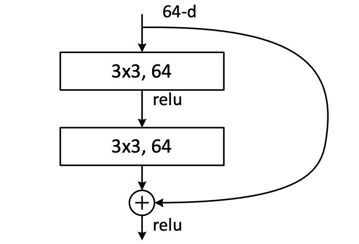
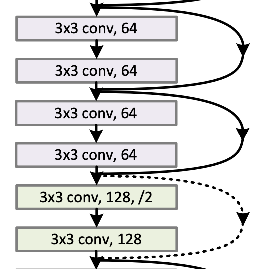

Residual Network¶
Deep Residual Learning for Image Recognition (He. et al, 2015)
Note
Main idea: To use skip-connection to train a deep neural network.
Problem: Deep networks, prior to ResNet, tends to have a problem in training when the model gets too deep. They tend to suffer from vanishing gradients, which the training signal can not pass back properly during the backpropagation.


Solution: To tackle this, ResNet uses skip-connection, as shown in the figure below. What skip-connection essentially does is that instead of just outputting \(f(x)\), we add the initial value \(x\) as well (denote by the curvy arrow). So, the output would be \(f(x)+x\). During the backpropagation, if the gradient vanishes inside those rectangle blocks, it can skip them and go via the curvy arrow instead.
How to use: We can assume the figure (on the left) as one block. A block would have some convolution layers along with a skip-connection from the input of the block to its output. Then, we can just stack these blocks together to form one deep network (Figure on the right).